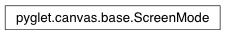

ScreenMode Class¶
-
class
ScreenMode(screen)¶ Screen resolution and display settings.
Applications should not construct ScreenMode instances themselves; see
Screen.get_modes().The
depthandratevariables may beNoneif the operating system does not provide relevant data.Note
Since pyglet 1.2
Attributes: